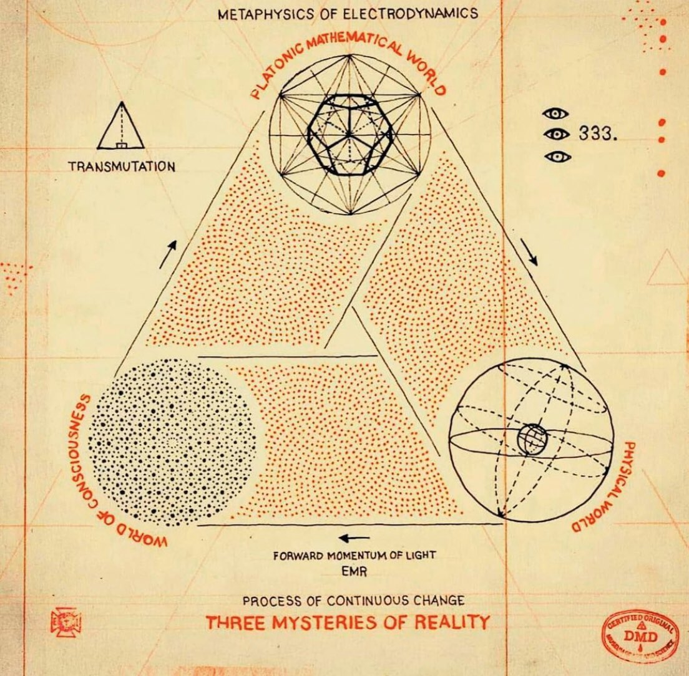
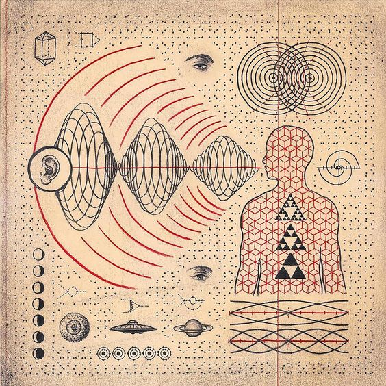
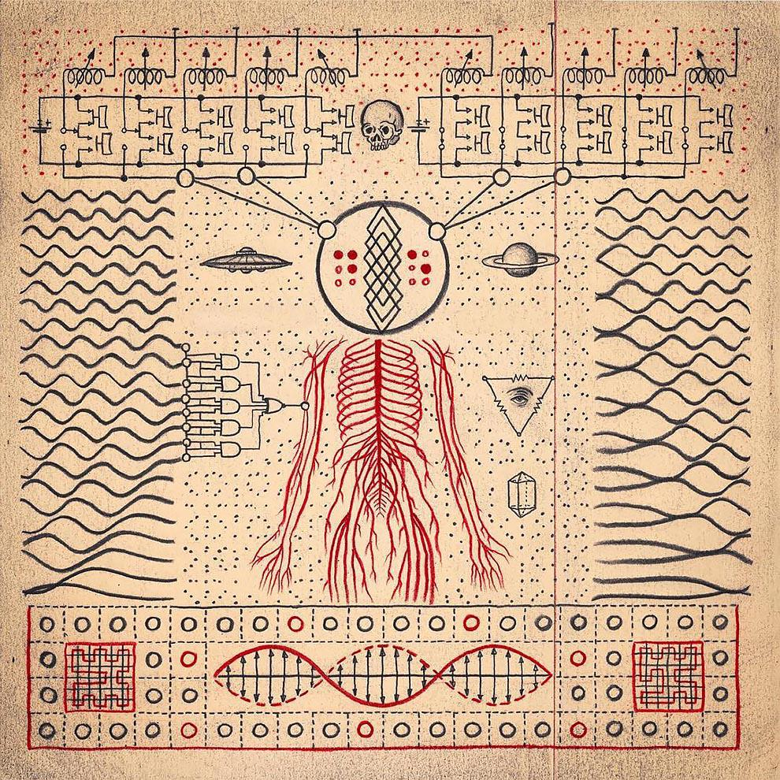

Os Três Mistérios da Realidade
Ilustração de Daniel Martin Diaz O Mundo Físico
O mundo físico é a realidade tangível e perceptível que nos cerca. É o domínio da matéria e energia, onde as leis da física governam o comportamento dos átomos e partículas. Este é o reino das experiências sensoriais, onde nossos sentidos de visão, audição, tato, paladar e olfato nos conectam com a realidade objetiva. O mundo físico é o palco de nossos corpos, de todas as coisas que podemos tocar e ver, e das forças naturais como a gravidade e o eletromagnetismo.
O Mundo Platônico-Matemático
Platão postulou a existência de um reino transcendente de formas puras e ideias imutáveis, conhecido como o mundo platônico. Este é o domínio da matemática, onde as verdades e relações matemáticas existem independentemente do mundo físico. Aqui, conceitos abstratos como números, formas geométricas, e teoremas matemáticos habitam uma realidade intangível, mas eternamente verdadeira. Matemáticos e filósofos frequentemente veem o mundo platônico como um reino de perfeição e ordem absoluta, que serve como base para a estrutura e funcionamento do mundo físico.
O Mundo da Consciência
A consciência é o domínio da experiência subjetiva, da mente e do espírito. Este é o mundo interno das percepções, pensamentos, emoções e autoconsciência. A natureza da consciência continua sendo um dos maiores mistérios da ciência e da filosofia. É o campo onde a realidade física e as ideias abstratas se encontram e se tornam significativas. A consciência é a janela através da qual experimentamos o mundo e construímos nossas narrativas pessoais. Ela levanta questões profundas sobre o livre-arbítrio, a natureza da alma e a origem da mente.
As Forças Magnéticas da Mudança
Ilustração de Daniel Martin Diaz No coração do Universo, há forças fundamentais que impulsionam a mudança e a transformação. As forças magnéticas da mudança podem ser vistas como uma metáfora para os processos de evolução, crescimento e transição que ocorrem em todos os níveis da existência. O magnetismo, em seu sentido físico, refere-se à atração e repulsão entre partículas carregadas, mas em um sentido mais amplo, pode simbolizar a atração irresistível entre ideias, eventos e seres que catalisam a transformação. A mudança é uma constante Universal, uma força que molda a realidade em todas as suas formas.
O Número 333
O número 333 carrega consigo uma aura de misticismo e simbolismo. Na numerologia, o número 3 é associado com criatividade, comunicação e expressão. Triplicado, o 333 é visto como um número de grande poder e significado espiritual. Representa a trindade divina, a interconexão entre o corpo, mente e espírito, e o equilíbrio harmonioso entre o mundo físico, platônico e da consciência. O 333 é frequentemente interpretado como um sinal de orientação espiritual, um lembrete de que o Universo está em sintonia com nossos pensamentos e ações, e que há uma ordem subjacente e harmoniosa na aparente aleatoriedade da vida.
Conexão
Ilustração de Daniel Martin Diaz Os três mundos - físico, platônico e da consciência - estão intrinsecamente ligados, cada um influenciando e refletindo os outros. A trindade destes mundos é como um triângulo de forças que sustentam a estrutura da realidade. O número 333, com seu simbolismo de equilíbrio e trindade, pode ser visto como uma representação numérica desta interconexão. Assim como as forças magnéticas impulsionam a mudança e a evolução, o 333 sugere um alinhamento cósmico, onde os aspectos físicos, matemáticos e conscientes da existência estão em perfeita harmonia, guiando a jornada contínua de descoberta e entendimento.